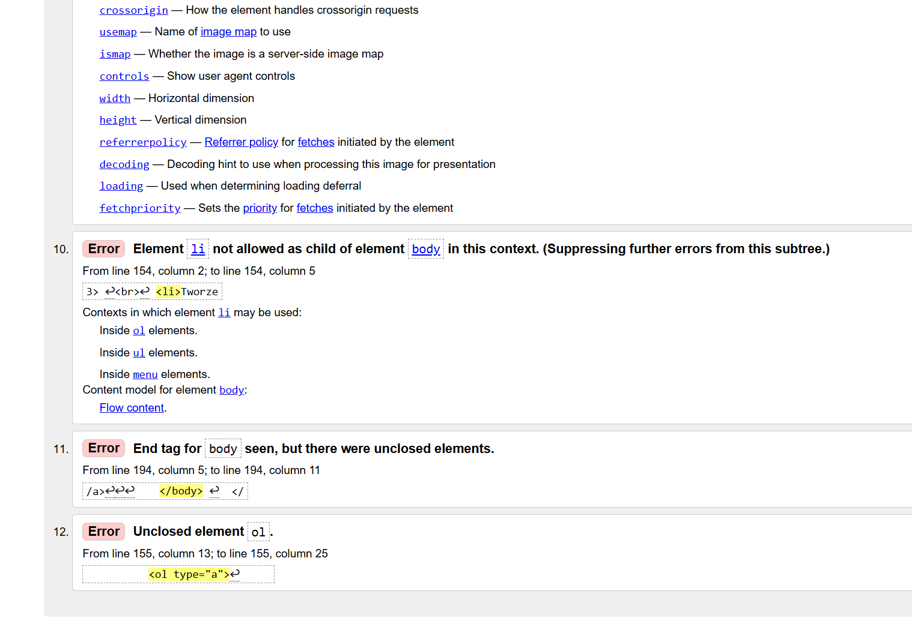

tutaj jest walidacja ok
Walidacja strony WWW to proces sprawdzania, czy kod źródłowy witryny (np. HTML, CSS, XML) jest zgodny z oficjalnymi standardami i specyfikacjami technicznymi ustanowionymi przez organizację World Wide Web Consortium (W3C)

Wróć